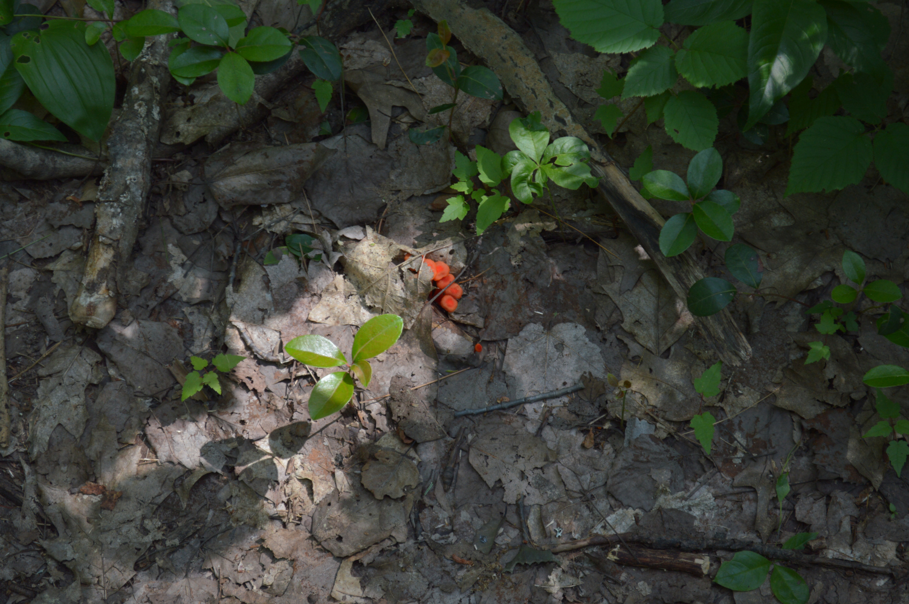

Dirt Robotics Inc. - An Overview
Demand for heavy earth-moving projects is at an all-time high. Operator pay is increasing in an effort to attract or retain workers. Significant portion of operators expect to retire in the next decade. The work site is full of (managed) hazards. Safety guidelines not always followed. Finding operators for any equipment you rent is difficult + expensive.
Operator demand is high and skilled labor supply is low, in a fairly dangerous occupation.
Maximize productivity per operator, to make their labor more worthwhile.
Maximize productivity per machine, to minimize machine idle time.
Minimize worksite hazards per operator, to improve operator wellbeing.
Provide equipment + operator package, to reduce logistical hurdles.
Supplement operator workforce with reliable robotic earthmoving.
Robotic heavy machinery arrives onsite, teleoperated by our skilled operators, enhanced by limited, supervised autonomy, improved by autonomous safety features, and with greater situational awareness than any one human operator.
Teleoperation removes the operator from the worksite, guaranteeing them a safe work environment in an office, away from noise, fumes, unstable soil, accidental strikes, and other potential hazards.
Limited Autonomy allows for simultaneous operation of multiple machines by a skilled operator, like a helping hand used to automate basic tasks. This acts as a multiplier on operator and machine productivity, while being realistic and acknowledging the strengths of human operation.
Improved safety features, such as automatic emergency stops, collision detection, and always-on camera recording bolster safety on the worksite.
Full Situational Awareness, provided by a suite of sensors on robotic equipment, provide significantly larger field of view than being inside a cab, affording operators heightened awareness of the worksite.
~
